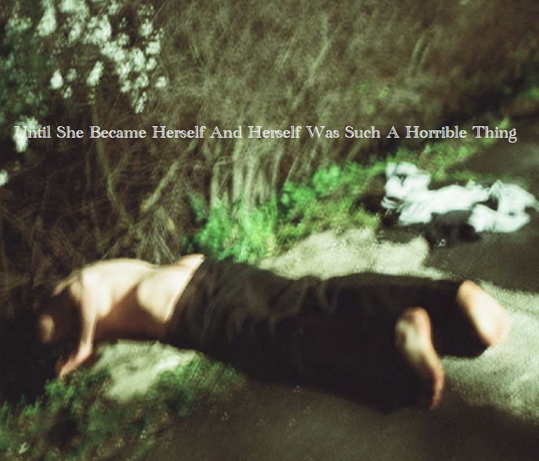

More then a photobook, it is it is an almonach that acts as a collection traces of life, found objects and performance stills: a place of emergence and a witness to the deeply intertwined life and work of Helena Kravinskiy from begining of her practice in 1978 till her trageic death in 2006.
$ 179.00
Edited by Robert Golwitz
234p, color, softcover, 16x14 inches
ISBN: 0-9574263-8-1